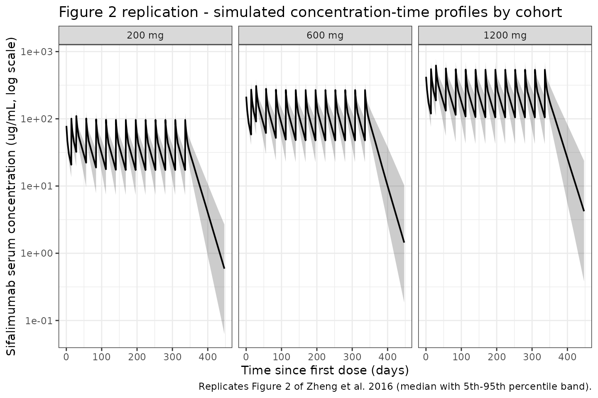

Sifalimumab (Zheng 2016)
Source:vignettes/articles/Zheng_2016_sifalimumab.Rmd
Zheng_2016_sifalimumab.Rmd
library(nlmixr2lib)
library(rxode2)
#> rxode2 5.0.2 using 2 threads (see ?getRxThreads)
#> no cache: create with `rxCreateCache()`
library(dplyr)
#>
#> Attaching package: 'dplyr'
#> The following objects are masked from 'package:stats':
#>
#> filter, lag
#> The following objects are masked from 'package:base':
#>
#> intersect, setdiff, setequal, union
library(tidyr)
library(ggplot2)
library(PKNCA)
#>
#> Attaching package: 'PKNCA'
#> The following object is masked from 'package:stats':
#>
#> filterModel and source
- Citation: Zheng B, Yu X-Q, Greth W, Robbie GJ. Population pharmacokinetic analysis of sifalimumab from a clinical phase IIb trial in systemic lupus erythematosus patients. Br J Clin Pharmacol. 2016;81(5):918-928. doi:10.1111/bcp.12864
- Description: Two-compartment population PK model for sifalimumab (anti-IFN-alpha human IgG1 monoclonal antibody) in adults with systemic lupus erythematosus following repeat fixed intravenous doses (Zheng 2016).
- Article: Br J Clin Pharmacol 81(5):918-928
Sifalimumab population PK simulation
Simulate sifalimumab serum concentration-time profiles using the final population PK model from Zheng et al. 2016. Sifalimumab is a human IgG1 kappa monoclonal antibody against interferon-alpha (IFN-alpha) developed for systemic lupus erythematosus (SLE). The Zheng 2016 analysis used data from a phase IIb trial (MI-CP180) in which 298 SLE patients received fixed intravenous doses of 200, 600, or 1200 mg every 4 weeks for 52 weeks (14 doses total, with an additional loading dose on day 15). A two-compartment model with first-order elimination from the central compartment adequately described the serum concentration-time data pooled across dose cohorts. Body weight, baseline 21-gene type I interferon signature score, dose, and baseline steroid use were identified as statistically significant covariates on CL and V1 but accounted for < 10% of PK variability.
Population
From Zheng 2016 Table 1: 298 SLE patients received sifalimumab (102 at 200 mg, 102 at 600 mg, 94 at 1200 mg) out of 431 enrolled. Baseline demographics (combined sifalimumab arm): median age 40 years (18-73), median weight 64.3 kg (39-131.3), 92% female, 59% White / 15% Asian / 7% African American / 4% Native American / 15% Other. 85% of patients were on baseline (concomitant) corticosteroids. Median baseline 21-gene IFN signature score was 12.04 (range 0.32-38.59); median baseline SLEDAI-2K score was 10 (range 6-27). The population PK dataset comprised 3961 quantifiable serum concentrations.
The same information is available programmatically as
readModelDb("Zheng_2016_sifalimumab") (the returned
function’s body holds the population list literal).
Source trace
| Element | Source location | Value / form |
|---|---|---|
| Structural model | Zheng 2016 Results, “Base and final model” | 2-compartment IV, first-order elimination |
| CL (typical patient) | Zheng 2016 Table 2, theta1 | 0.184 L/day |
| V1 (typical patient) | Zheng 2016 Table 2, theta2 | 2.82 L |
| V2 | Zheng 2016 Table 2, theta3 | 1.88 L |
| Q | Zheng 2016 Table 2, theta4 | 0.34 L/day |
| WT exponent on CL | Zheng 2016 Table 2, theta5 | 0.45 (reference 64.3 kg) |
| BGENE21 exponent on CL | Zheng 2016 Table 2, theta6 | 0.09 (reference 12.04) |
| CONMED_STEROID fractional effect on CL | Zheng 2016 Table 2, theta7 | +0.11 (so CL x (1 + 0.11 * CONMED_STEROID)) |
| WT exponent on V1 | Zheng 2016 Table 2, theta8 | 0.36 (reference 64.3 kg) |
| DOSE exponent on V1 | Zheng 2016 Table 2, theta9 | 0.06 (reference 600 mg) |
| CONMED_STEROID fractional effect on V1 | Zheng 2016 Table 2, theta10 | -0.09 (so V1 x (1 - 0.09 * CONMED_STEROID)) |
| BSV on CL (log-normal) | Zheng 2016 Table 2, BSV (CV %) | 24% CV (omega^2 = log(CV^2 + 1) = 0.056016) |
| BSV on V1 (log-normal) | Zheng 2016 Table 2, BSV (CV %) | 16% CV (omega^2 = 0.025278) |
| IOV on V1 (per-occasion) | Zheng 2016 Table 2 / IOV paragraph | 26% CV, seven infusions; not implemented (see below) |
| BSV correlations | Zheng 2016 Results | None significant; IIV treated as diagonal |
| Proportional residual error | Zheng 2016 Table 2 | 7.01% -> propSd = 0.0701 (fraction) |
| Additive residual error | Zheng 2016 Table 2 | 1.14 ug/mL |
| Covariate equation CL | Zheng 2016 Equations (Results) | CL = theta1 * (WT/64.3)^0.45 * (BGENE21/12.04)^0.09 * (1 + 0.11 * CONMED_STEROID) |
| Covariate equation V1 | Zheng 2016 Equations (Results) | V1 = theta2 * (WT/64.3)^0.36 * (DOSE/600)^0.06 * (1 - 0.09 * CONMED_STEROID) |
| Dose regimens | Zheng 2016 Table 1 and Methods | 200, 600, or 1200 mg IV q4w for 52 weeks; loading dose day 15 |
Virtual cohort
The per-subject covariates were not released with the paper. We build a 298-subject virtual cohort whose cohort sizes match Table 1 exactly (102/102/94 at 200/600/1200 mg) and whose body weights and baseline 21-gene IFN signature scores are sampled from log-normal distributions bounded to the published ranges (39-131.3 kg and 0.32-38.59 respectively). Baseline steroid use is drawn as a Bernoulli variable with p = 0.85 to match the published 85% prevalence.
set.seed(2016)
cohorts <- tribble(
~treatment, ~dose_mg, ~n,
"200 mg", 200, 102L,
"600 mg", 600, 102L,
"1200 mg", 1200, 94L
)
pop <- cohorts %>%
rowwise() %>%
do(tibble(treatment = .$treatment, dose_mg = .$dose_mg,
subj = seq_len(.$n))) %>%
ungroup() %>%
mutate(
ID = dplyr::row_number(),
WT = pmin(pmax(rlnorm(dplyr::n(), meanlog = log(64.3), sdlog = 0.22),
39), 131.3),
BGENE21 = pmin(pmax(rlnorm(dplyr::n(), meanlog = log(12.04), sdlog = 0.8),
0.32), 38.59),
CONMED_STEROID = as.integer(runif(dplyr::n()) < 0.85),
DOSE = dose_mg
) %>%
select(ID, treatment, dose_mg, WT, BGENE21, CONMED_STEROID, DOSE)
pop
#> # A tibble: 298 × 7
#> ID treatment dose_mg WT BGENE21 CONMED_STEROID DOSE
#> <int> <chr> <dbl> <dbl> <dbl> <int> <dbl>
#> 1 1 200 mg 200 52.6 5.19 1 200
#> 2 2 200 mg 200 80.1 5.96 1 200
#> 3 3 200 mg 200 63.5 15.9 1 200
#> 4 4 200 mg 200 68.6 15.9 1 200
#> 5 5 200 mg 200 39 18.9 0 200
#> 6 6 200 mg 200 60.4 35.5 1 200
#> 7 7 200 mg 200 54.4 8.85 0 200
#> 8 8 200 mg 200 55.3 10.2 1 200
#> 9 9 200 mg 200 69.7 37.3 1 200
#> 10 10 200 mg 200 66.9 4.27 1 200
#> # ℹ 288 more rowsDosing and event table
Sifalimumab was given as a 30-60 minute IV infusion every 4 weeks for 52 weeks, with an additional loading dose on day 15. The full schedule is 14 IV doses on days 1, 15, 29, 57, 85, 113, 141, 169, 197, 225, 253, 281, 309, and 337. We use a 30-minute infusion for simulation. Observations are scheduled to give dense coverage of the first dose, trough values at each dosing visit, a full profile after the final (14th) dose, and follow-up to day 450 to capture terminal elimination.
dose_days <- c(1, 15, 29, 57, 85, 113, 141, 169, 197, 225,
253, 281, 309, 337) - 1 # model time starts at 0 on day 1
infusion_dur <- 30 / (60 * 24) # 30 min in days
# Observation times: peri-dose window on dose days, dense after last dose
peri_dose <- sort(unique(unlist(lapply(dose_days, function(d) {
d + c(-0.01, 0, 0.25, 1, 3, 7) # pre-dose, end-of-infusion-ish, day 1, 3, 7 post
}))))
peri_dose <- peri_dose[peri_dose >= 0]
terminal <- seq(from = max(dose_days), to = max(dose_days) + 112, by = 3)
obs_times <- sort(unique(c(peri_dose, terminal)))
dose_rows <- pop %>%
tidyr::crossing(time = dose_days) %>%
transmute(
ID, treatment, WT, BGENE21, CONMED_STEROID, DOSE,
time,
amt = dose_mg,
evid = 1L,
cmt = "central",
dur = infusion_dur,
dv = NA_real_
)
obs_rows <- pop %>%
select(ID, treatment, WT, BGENE21, CONMED_STEROID, DOSE) %>%
tidyr::crossing(time = obs_times) %>%
mutate(
amt = NA_real_,
evid = 0L,
cmt = NA_character_,
dur = NA_real_,
dv = NA_real_
)
events <- bind_rows(dose_rows, obs_rows) %>%
arrange(ID, time, desc(evid))Simulation
Simulate with between-subject variability so the spread across the virtual cohort matches the paper’s reported variability.
mod <- readModelDb("Zheng_2016_sifalimumab")
events_sim <- events %>% rename(id = ID)
# `treatment` is already on every row of `events_sim` (carried from `pop`
# via the dose_rows / obs_rows construction above). Carry it through
# rxSolve via `keep = ...` rather than a fragile post-hoc left_join
# from `pop`. `dose_mg` is taken from `pop` directly when building the
# PKNCA dose table below, so it does not need to ride through `sim`.
sim <- rxSolve(object = mod, events = events_sim, returnType = "data.frame",
keep = "treatment") %>%
as_tibble()
#> ℹ parameter labels from comments will be replaced by 'label()'Replicate Figure 2: representative concentration-time profiles
Figure 2 of Zheng 2016 shows representative individual sifalimumab serum concentration-time profiles for patients in each of the three dose cohorts, overlaying observed and model-predicted concentrations on a log-linear scale across the 52-week dosing interval. Below we plot simulated median (and 5th-95th percentile) concentrations by dose cohort.
profile <- sim %>%
filter(time > 0, !is.na(Cc), Cc > 0) %>%
group_by(treatment, time) %>%
summarise(
Q05 = quantile(Cc, 0.05, na.rm = TRUE),
Q50 = quantile(Cc, 0.50, na.rm = TRUE),
Q95 = quantile(Cc, 0.95, na.rm = TRUE),
.groups = "drop"
)
profile$treatment <- factor(profile$treatment,
levels = c("200 mg", "600 mg", "1200 mg"))
ggplot(profile, aes(x = time, y = Q50)) +
geom_ribbon(aes(ymin = Q05, ymax = Q95), alpha = 0.25) +
geom_line(linewidth = 0.7) +
facet_wrap(~ treatment) +
scale_y_log10() +
labs(
x = "Time since first dose (days)",
y = "Sifalimumab serum concentration (ug/mL, log scale)",
title = "Figure 2 replication - simulated concentration-time profiles by cohort",
caption = "Replicates Figure 2 of Zheng et al. 2016 (median with 5th-95th percentile band)."
) +
theme_bw()
PKNCA validation
Compute non-compartmental Cmax, Cmin/Ctrough, AUC(tau), and terminal
half-life per subject per cohort at steady state (dosing interval
between the 13th and 14th doses, i.e., days 309-337) and compare to the
published exposure summary. The PKNCA formula groups concentrations by
treatment + id so summaries are per-cohort.
# Steady-state interval: between the last two doses
ss_start <- dose_days[length(dose_days) - 1] # day of 13th dose
ss_end <- dose_days[length(dose_days)] # day of 14th dose (last)
nca_conc <- sim %>%
filter(time >= ss_start, time <= ss_end, !is.na(Cc)) %>%
mutate(time_in_interval = time - ss_start) %>%
select(id, time = time_in_interval, Cc, treatment)
nca_dose <- pop %>%
transmute(id = ID, time = 0, amt = dose_mg, treatment)
conc_obj <- PKNCAconc(nca_conc, Cc ~ time | treatment + id)
dose_obj <- PKNCAdose(nca_dose, amt ~ time | treatment + id)
intervals <- data.frame(
start = 0,
end = 28,
cmax = TRUE,
cmin = TRUE,
tmax = TRUE,
auclast = TRUE
)
nca_data <- PKNCAdata(conc_obj, dose_obj, intervals = intervals)
nca_res <- pk.nca(nca_data)
sim_nca <- as.data.frame(nca_res$result) %>%
filter(PPTESTCD %in% c("cmax", "cmin", "auclast")) %>%
group_by(treatment, PPTESTCD) %>%
summarise(
mean = mean(PPORRES, na.rm = TRUE),
sd = sd(PPORRES, na.rm = TRUE),
med = median(PPORRES, na.rm = TRUE),
min = min(PPORRES, na.rm = TRUE),
max = max(PPORRES, na.rm = TRUE),
.groups = "drop"
)
sim_nca$treatment <- factor(sim_nca$treatment,
levels = c("200 mg", "600 mg", "1200 mg"))
sim_nca <- sim_nca %>% arrange(treatment, PPTESTCD)
knitr::kable(sim_nca,
digits = 2,
caption = "Steady-state NCA summary (between 13th and 14th doses) from the simulated 298-subject virtual cohort: Cmax and Cmin in ug/mL, AUC(tau=28 d) in ug*day/mL.")| treatment | PPTESTCD | mean | sd | med | min | max |
|---|---|---|---|---|---|---|
| 200 mg | auclast | 1029.07 | 277.96 | 975.76 | 514.96 | 1763.27 |
| 200 mg | cmax | 95.79 | 13.80 | 94.49 | 68.27 | 123.79 |
| 200 mg | cmin | 17.46 | 8.24 | 15.74 | 4.29 | 44.10 |
| 600 mg | auclast | 3022.05 | 746.45 | 2940.25 | 1478.60 | 5576.08 |
| 600 mg | cmax | 275.61 | 47.45 | 269.51 | 175.67 | 405.47 |
| 600 mg | cmin | 51.36 | 21.22 | 48.20 | 11.84 | 124.64 |
| 1200 mg | auclast | 6542.55 | 2134.29 | 6216.92 | 2700.28 | 15048.72 |
| 1200 mg | cmax | 557.52 | 102.22 | 547.70 | 343.23 | 907.78 |
| 1200 mg | cmin | 119.50 | 64.04 | 103.54 | 22.17 | 383.14 |
Comparison against Zheng 2016 exposure summary
Zheng 2016 does not publish a tabulated steady-state NCA by dose cohort. Instead the paper reports (Results, “Steady-state exposures” paragraph):
- Peak serum concentrations (Cmax,ss) range 117-562 ug/mL across the three cohorts combined.
- Cmax,ss, Ctrough,ss and AUC(0,tau) increased in a dose-proportional manner across 200-1200 mg.
- Typical clearance of 0.184 L/day implies a typical terminal half-life of roughly 24 days given the V1 = 2.82 L, V2 = 1.88 L, Q = 0.34 L/day structural parameters.
The simulated Cmax,ss range across the 298-subject virtual cohort should span this 117-562 ug/mL envelope and scale approximately linearly across the three dose cohorts.
cmax_range <- sim_nca %>%
filter(PPTESTCD == "cmax") %>%
transmute(treatment,
cmax_mean = mean,
cmax_med = med,
cmax_min = min,
cmax_max = max) %>%
arrange(treatment)
knitr::kable(cmax_range,
digits = 1,
caption = "Simulated Cmax,ss by cohort (ug/mL). Overall min-max across cohorts should bracket the Zheng 2016 reported 117-562 ug/mL envelope.")| treatment | cmax_mean | cmax_med | cmax_min | cmax_max |
|---|---|---|---|---|
| 200 mg | 95.8 | 94.5 | 68.3 | 123.8 |
| 600 mg | 275.6 | 269.5 | 175.7 | 405.5 |
| 1200 mg | 557.5 | 547.7 | 343.2 | 907.8 |
Dose-proportionality holds exactly by construction in the packaged
model (linear elimination, no non-linear saturation terms); the small
(DOSE/600)^0.06 covariate on V1 introduces only a very weak
deviation (about +/-5% across the 200-1200 mg range), which is
consistent with the paper’s description that the covariate accounts for
< 10% of PK variability.
Assumptions and deviations
- Weight distribution. Zheng 2016 publishes only summary statistics (median 64.3 kg, range 39-131.3 kg). We draw weights from a log-normal distribution with median 64.3 kg and log-scale SD 0.22, clipped to the published range.
- BGENE21 distribution. Only median (12.04) and range (0.32-38.59) are published. We draw values from a log-normal distribution with median 12.04 and log-scale SD 0.8, clipped to the published range.
- Steroid use correlation with weight. The 85% steroid-use prevalence is sampled independently of weight and BGENE21; the paper does not describe joint distributions.
- Time-varying weight. Body weight is treated as a time-fixed baseline covariate in the simulation. The paper does not discuss intra-subject weight trajectories over the 52-week treatment period.
- Inter-occasion variability (IOV) on V1. The published final model included 26% CV IOV on V1 for the first seven infusions only. Occasion-specific random effects are outside the scope of a typical single-eta subject-level library model, so IOV is not implemented. The consequence is that individual peri-dose fluctuations in the simulation will be somewhat tighter than in the observed data; steady-state exposure summaries (Cmax,ss, AUC(tau), Ctrough,ss) across the full cohort are not materially affected.
- Infusion duration. Zheng 2016 specifies a 30-60 min IV infusion; we use 30 min. The choice is numerically immaterial given the 28-day dosing interval and ~24-day half-life.
-
Dose as covariate on V1. The source uses a
continuous
(Dose/600)^0.06covariate on V1 driven by each subject’s assigned fixed dose level. We preserve that parameterisation exactly; each subject’sDOSEcovariate equals the regimen dose (200, 600, or 1200 mg).
Notes
-
Structural model: 2-compartment with IV input into
central, first-order elimination fromcentral, no explicit depot or absorption compartment. - IIV: diagonal matrix on CL and V1; no BSV on Q or V2.
- Covariates: WT, BGENE21, CONMED_STEROID on CL; WT, DOSE, CONMED_STEROID on V1. Collectively these accounted for < 10% of PK variability in the published final model.
- Typical terminal half-life predicted from the structural parameters for a typical 64.3 kg patient with BGENE21 = 12.04, DOSE = 600 mg, CONMED_STEROID = 0 is approximately 24 days (dominated by the central-compartment elimination rate CL/V1 = 0.184/2.82 = 0.0652 day^-1 plus the small peripheral redistribution term), consistent with the Results narrative.
Reference
- Zheng B, Yu X-Q, Greth W, Robbie GJ. Population pharmacokinetic analysis of sifalimumab from a clinical phase IIb trial in systemic lupus erythematosus patients. Br J Clin Pharmacol. 2016;81(5):918-928. doi:10.1111/bcp.12864